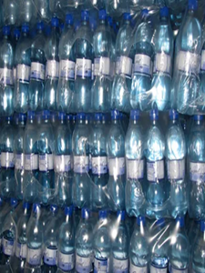
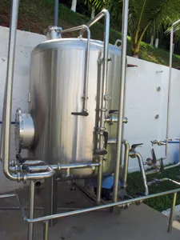

  A melhor água da Região dos Lagos, e uma das melhores do mundo, é de Saquarema. E, para homenagear a cidade onde esta fonte brota naturalmente, o nome não poderia ser mais sugestivo: Água Saquá. Com três pontos de captação em funcionamento, na Serra Castelhana, a Água Saquá é captada em poços tubulares de 150 metros de profundidade revestidos em aço inox. Ao lado dos poços e reservatórios, uma fábrica de vasilhames completa a linha de produção da Água Saquá, um dos empreendimentos mais sustentáveis do município.
Comercializada em embalagens de 310 ml, 510 ml e um litro e meio, além dos tradicionais garrafões, a Água Saquá é rica em minerais que ajudam a melhorar a qualidade de vida das pessoas. Rica em vanádio, diminui o colesterol, prevenindo doenças cardiovasculares; atua no rejuvenescimento, nas infecções; favorece ao diabético, atuando também nas anemias; é cicatrizante e antiestressante. Outro componente natural da Água Saquá é o lítio que contribui no tratamento de distúrbios renais e digestivos, em certos tipos de intoxicações e é antidepressivo. A Água Saquá ainda contém flúor que participa na manutenção da saúde de dentes e ossos e bicarbonato, coadjuvante no tratamento de cálculos renais, enfermidades hepáticas, artrites e gotas.
Com essas qualidades, a Água Saquá está entre as cinco mais consumidas no Rio de Janeiro. O complexo industrial, com três reservatórios, sendo dois com capacidade para 50 mil litros, também tem uma fábrica de embalagens de variados tamanhos, cores e formatos para atender não só a demanda da Água Saquá mas também de outros clientes. “Hoje estamos produzindo cerca de 3 mil garrafões de água por dia, além de 2 mil de cada uma das pequenas (garrafinhas de 310 ml, de meio litro e de um litro e meio). Estamos distribuindo em todo o Estado do Rio de Janeiro, na Baixada Fluminense, na Região Metropolitana, Niterói, São Gonçalo, Região dos Lagos e capital”, explica o empresário Pedro Rosa. Junto com o sócio italiano, Federico Bragaglia, ele já pensa em expansão, mirando o terreno que acabaram de adquirir em frente à atual sede da Água Saquá, na Estrada do Rio Seco. Com cerca de 30 funcionários, a Água Saquá é um feliz empreendimento que funciona com o rigor dos padrões ambientais, totalmente integrado à natureza.
A Água Saquá, empresa do XXXXXXX, desempenha suas atividades com base em princípios e valores inegociáveis, que pautam as relações internas e externas, norteando desde a alta gestão a todos os colaboradores nas tomadas de decisões. O Código de Conduta do Grupo Água Saquá representa o compromisso da empresa com uma atuação responsável, ética, transparente e de respeito mútuo com todos os públicos com os quais a empresa se relaciona. Expressa, também, o pacto da companhia para alcançar seus objetivos empresariais com responsabilidade social preservando o meio ambiente e contribuindo para o desenvolvimento das comunidades em que está inserido.
É com pesar que testemunhamos os desafios que o Estado do Rio Grande do Sul está enfrentando recentemente. Na Água Saquá, nossa preocupação vai para todos aqueles afetados por esses eventos devastadores. Queremos expressar nossa mais profunda solidariedade aos indivíduos, famílias e comunidades que estão lidando com as consequências dessas adversidades. Reconhecemos a resiliência e a força do povo gaúcho diante desses momentos difíceis.